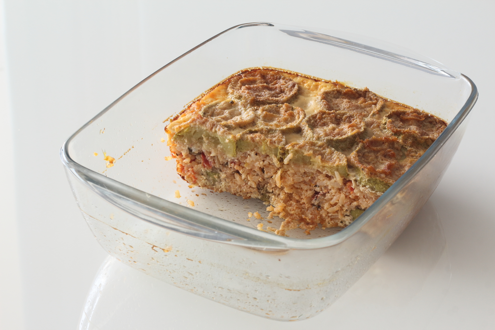

Home
Vegetarian Zucchini Moussaka

Ingredients for frying the zucchini
- Zucchini — 600 g (2 medium)
- Salt — a pinch
- Flour — 1 tablespoon
- Vegetable oil — 1 tablespoon
Ingredients for the rice mixture
- Butter — 2 tablespoons or vegetable oil — 1 tablespoon
- Onion — 1 small
- Dry rice — 50 g (5 tablespoons)
- Salt — 2-3 g (on the tip of a spoon or half a level teaspoon)
- Garlic (optional) — 1 small clove
- Water — 75 ml (5 tablespoons)
- Tomato — 1 piece or 1.5 pieces for extra juiciness
- Parsley — to taste, 8-12 g (6-10 stems with leaves)
- Dill (optional) — to taste, 2-3 g (4-6 stems with leaves)
- Ground black pepper (optional) — 0.3 g (on the tip of a teaspoon)
- Paprika (optional) — 0.5 g (a pinch)
Ingredients for the custard
- Milk, dairy or plant-based (oat or soy) — 200-250 ml (1 cup)
- Eggs — 2 for a softer moussaka or 3 for a firmer texture
- Hard cheese (optional) — 40 g (half a cup) or plant-based cheese sauce (optional) — 2 tablespoons
Directions
- Slice the zucchini into rounds, lightly salt with a pinch of salt, dredge in flour, and fry in vegetable oil until golden.
- Finely chop the onion and sauté it in butter or vegetable oil. Add the dry rice, salt, and optional garlic. Fry, stirring, until the rice turns translucent.
- Pour in the water and let it simmer until the rice begins to swell. Then add the chopped tomato, finely chopped parsley, optional dill, black pepper, and paprika. Cook for a few more minutes until the mixture thickens slightly.
- Grease a deep baking dish with a little oil. Arrange half of the fried zucchini slices on the bottom in an even layer.
- Spread the rice mixture evenly over the zucchini, then cover with the remaining zucchini slices.
- Whisk together the milk and eggs. If using cheese or cheese sauce, either mix it into the custard or reserve the grated cheese to sprinkle on top during the last 10 minutes of baking.
- Pour the custard evenly over the layered zucchini and rice.
- Bake in a preheated oven at 190-200°C for about 35-45 minutes, until the top is set and golden brown.